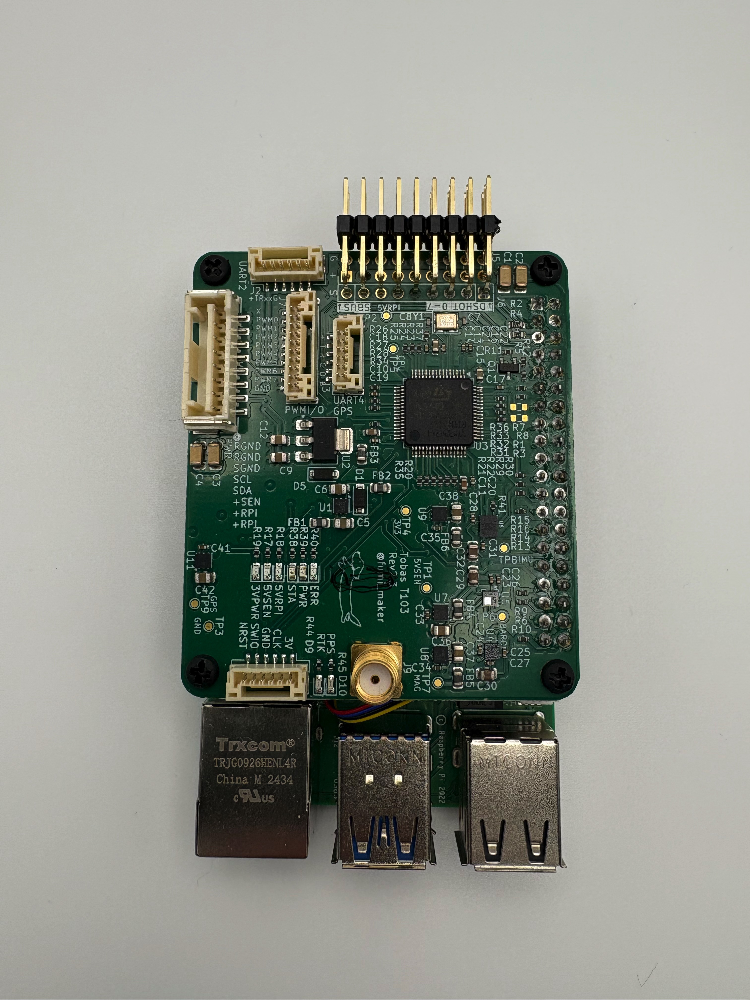
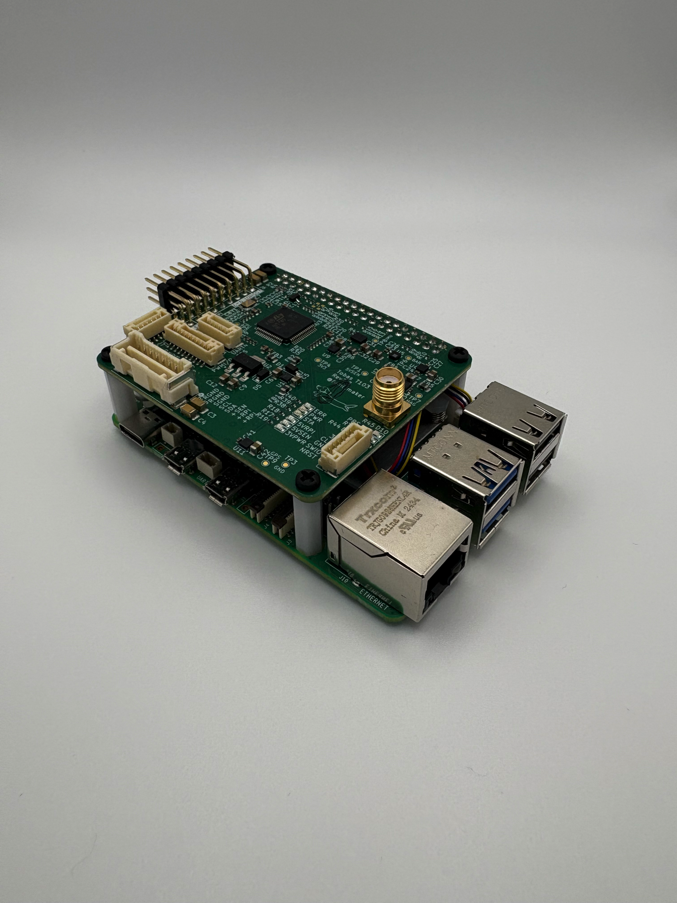

Tobas ユーザガイド¶
Tobasは，モデルベース設計とLinuxを基盤とした，ドローン・ロボット航空機向けフライトコントローラです． 従来のフライトコントローラと異なり，個々の機体の構造を詳細に考慮して制御系を設計するため， 従来のフライトコントローラでは難しい機体でも精度良く飛ばすことができます．
特徴¶
- 独自のフォーマットで機体構造を定義し，機体の構造を正しく制御器に反映
- モータの回転数制御により，応答性・追従制度が向上
- 可動ジョイントの角度変化による自重・反力を保証
- 突風や地面効果などの外乱を補償
- 完全 GUI でセットアップ可能
- ROS 2 に対応し，シミュレーションと実機で同じインターフェースを提供
何ができるか¶
制御性能の向上¶
Tobas はユーザの機体の物理特性を正しく利用して制御を行うため， 従来のフライトコントローラよりも優れた制御性能を発揮できます． 例えば以下のような情報を考慮しています．
- 機体を構成する各剛体リンクの力学パラメータ: 質量，重心，慣性テンソル
- バッテリーのスペック: セル数，放電容量，放電率
- モータのスペック: KV 値，内部抵抗，磁極数
- プロペラのスペック: 直径，ピッチ，推力定数，反トルク定数
機体設計の幅を拡大¶
Tobas では機体の構造はUADF (Universal Aircraft Description Format)で定義され， 従来のフライトコントローラでは難しかった様々な機体を飛ばすことができます． 例えば，Tobas は以下のような変則的な機体にも対応しています．
- ペイロードにより重心が中心部から大きく外れた機体
- カメラの画角を確保するためにプロペラの配置が非対称な機体
- ロボットアームを搭載した機体
- チルトロータを搭載した機体
ゲイン調整の手間を削減¶
機体を正しくモデル化することで，並進系と回転系のダイナミクスを機体に非依存の形で取り出せ，事前に解析することができます． それにより Tobas では予め無難なゲインが設定されており，ユーザは基本的にゲイン調整をすることなく機体を飛ばすことができます． また，必要であれば全てのパラメータを飛行中にオンラインで調整することができます．
現実に即したシミュレーション¶
機体の質量特性や推進系の空力特性を考慮しているため，現実に即した物理シミュレーションが可能です． それにより，実機試験のコストを大幅に削減することができます．
以下のような，飛行に大きな影響を与える要素を簡単にシミュレーションできます：
- 風 (定常風，乱流，突風)
- バッテリーの電圧降下
- ESC の最大電流
- センサの遅延，ノイズ
- 吊り下げ荷物
Flight Management Unit (FMU)¶
Tobas FC101¶


Sensors & Processors¶
- 6-axis IMU: ISM330DLC | STMicroelectronics
- Magnetometer: IIS2MDC | STMicroelectronics
- Barometer: ILPS22QS | STMicroelectronics
- GNSS Receiver: ZED-F9P | u-blox
- Voltage/Current Sensor: INA228 | Texas Instruments
- Main Computer: Raspberry Pi 5
- I/O Controller: STM32H7A3 | STMicroelectronics
Interface¶
- GNSS Antenna: SMA
- Power Module: Molex 2.0mm 8pin
- UART, I2C Interface: JST-GH 6pin
使用例¶
クアッドコプター¶
典型的なクアッドコプターです． DJI F450 のフレームキットを使用しています．
非平面ロータ配置ヘキサコプター¶
全てのプロペラが水平面から 30 度傾いているヘキサコプターです． 平面ロータ配置のマルチコプターは位置を変化させるために姿勢を変化させる必要があるのに対し， 非平面ロータ配置マルチコプターは位置と姿勢を独立に制御することができます． そのため，地面と平行の姿勢を保ったまま平行移動したり，ホバリングしたまま姿勢を変化させることができます． また，直接水平方向に推力を発生させられるため位置決め精度が高く，耐風性能にも優れています．
アクティブチルトヘキサコプター¶
全てのアームを両方向に 120 度ずつ回転させられるヘキサコプターです． ホバリングした状態で姿勢を大きく変化させられるのが特徴です． 取り付けた検査機器等を任意の姿勢で保持することができるため，例えば傾いた壁面に対する非破壊検査への応用が期待されます．
ロボットアームドローン¶
チルトヘキサコプターに 4 軸のロボットアームを搭載した機体です． アームにより発生する反力や重心の変化を動的に補償することで， アームを大きく振り回しても位置姿勢を一定範囲内に留めることができています．
システム要件¶
PC ¶
以下の要件を満たす必要があります．
| 要件 | 必須 | 推奨 | 備考 |
|---|---|---|---|
| OS | Ubuntu 24.04 LTS (ROS 2 Jazzy) | ネイティブ環境推奨 | |
| RAM | 8GB | 16GB | |
| CPU | AMD64 (x86-64) | ||
| GPU | NVIDIA GeForce RTX | ||
| ディスプレイ解像度 | 2K/FHD | 4K/UHD |
ESC¶
Bidirectional DShot プロトコルに対応している必要があります． 例えば以下のファームウェアは対応しています．
GNSS アンテナ¶
FMU に搭載されている GNSS 受信機の周波数帯域とコネクタに対応している必要があります．
RC 受信機¶
8 チャンネル以上の S.BUS に対応している必要があります．